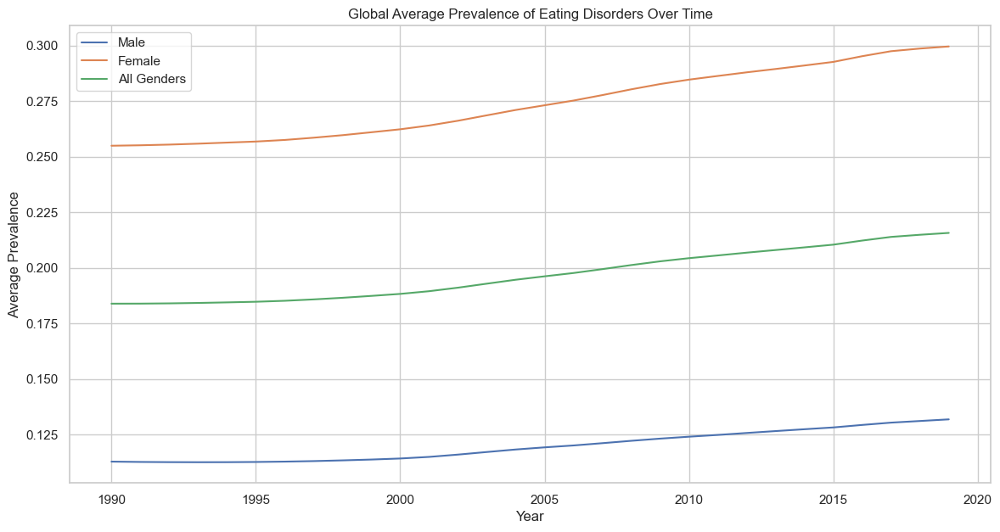
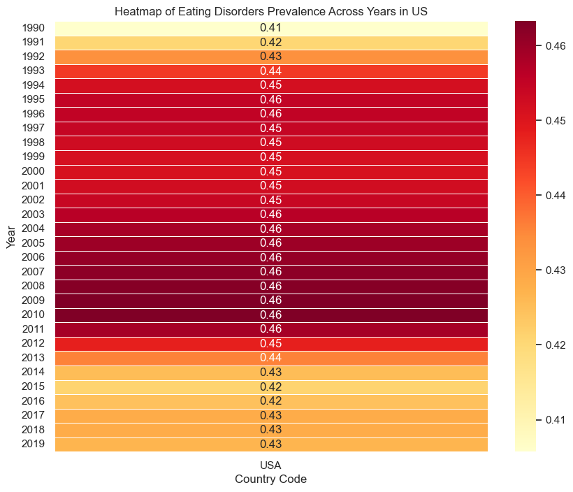

import pandas as pd#load the data setsdf_age_first_depression=pd.read_csv('./Data_cleaned/age_when_first_anxiety_or_depression.csv')df_eating_disorder=pd.read_csv('./Data_cleaned/eating_disorder_male_female.csv')df_mental_health=pd.read_csv('./Data_cleaned/mental_health.csv')df_mental_physical=pd.read_csv('./Data_cleaned/symptoms.csv')df_gdp_mental_health_2017=pd.read_csv('./Data/GDP_percaptita_mental_health_2017.csv')
Data Understanding
1.Mental Health Dataset
The dataset contains various mental health-related metrics for different economies over several years, with information from different years and countries, with percentages for various mental health conditions such as schizophrenia, bipolar disorder, eating disorders, anxiety disorders, and depression. Additional columns include economic indicators like income group, average learning adjusted years of school, continent, GDP for 2022, and a column related to comfort speaking about anxiety or depression, which has many missing values (NaN).
Economy: The name of the economy or country. Code: The country code.
Year: The year of the data record.
Schizophrenia (%): The prevalence of schizophrenia as a percentage. Bipolar disorder (%): The prevalence of bipolar disorder as a percentage.
Eating disorders (%): The prevalence of eating disorders as a percentage.
Anxiety disorders (%): The prevalence of anxiety disorders as a percentage.
Depression (%): The prevalence of depression as a percentage.
Income group: The income group classification of the economy.
average_learning_Adjusted_of_school: Some metric related to schooling, perhaps average years of schooling adjusted for learning.
Continent: The continent where the economy is located.
GDP(2022): The GDP of the economy for the year 2022.
GDP_per_capita(2022): The GDP per capita of the economy.
not_at_all_comfortable_speaking_anxiety_or_depression_percent: The percentage of people not at all comfortable speaking about anxiety or depression
Records: 5,488 Variables: 14 (1 integer, 9 floats, 4 objects) Features: Includes country data, year, percentages for various mental health conditions, income group, average learning, continent, GDP, GDP per capita, and comfort speaking about anxiety/depression.
This dataset includes the prevalence of eating disorders among males and females, as well as a combined figure for all genders, across different countries and years.
Country: The name of the country.
Country Code: The corresponding country code.
Year: The year of the observation.
Eating_disorders_Male: The prevalence of eating disorders among males.
Eating_disorders_Female: The prevalence of eating disorders among females.
All_gender: The prevalence of eating disorders across all genders.
Records: 6,420 Variables: 6 (1 integer, 3 floats, 2 objects) Features: Includes country data, year, and eating disorder prevalence separated by male, female, and all genders.
The dataset contains information on the age at which individuals first experienced anxiety or depression, categorized by different entities (which seem to represent regions or income categories).
Entity: The region or income category.
Age: The age category when anxiety or depression was first experienced.
Percentage: The percentage of individuals in that entity and age category.
Records: 42 Variables: 3 (2 objects, 1 float) Features: Includes entity (could be country or other types of entities), age category, and percentage of individuals with first anxiety or depression experience.
{'age_first_depression_or_anxiety': Entity Age Percentage
count 42 42 42.000000
unique 7 6 NaN
top Africa Ages <13 NaN
freq 6 7 NaN
mean NaN NaN 16.666667
std NaN NaN 10.060695
min NaN NaN 1.271836
25% NaN NaN 8.871260
50% NaN NaN 14.426575
75% NaN NaN 22.251861
max NaN NaN 42.724724,
'eating_disorder': Economy Code Year Eating_disorders_Male \
count 6420 6150 6420.000000 6420.000000
unique 214 205 NaN NaN
top Afghanistan AFG NaN NaN
freq 30 30 NaN NaN
mean NaN NaN 2004.500000 0.119775
std NaN NaN 8.656116 0.068943
min NaN NaN 1990.000000 0.033360
25% NaN NaN 1997.000000 0.071057
50% NaN NaN 2004.500000 0.098256
75% NaN NaN 2012.000000 0.148705
max NaN NaN 2019.000000 0.672270
Eating_disorders_Female All_gender
count 6420.000000 6420.000000
unique NaN NaN
top NaN NaN
freq NaN NaN
mean 0.273787 0.196781
std 0.214920 0.140066
min 0.056762 0.045083
25% 0.121105 0.096171
50% 0.187430 0.144395
75% 0.352395 0.252282
max 1.395754 1.034012 ,
'mental_health': Economy Code Year Schizophrenia (%) \
count 5488 5488 5488.000000 5488.000000
unique 196 196 NaN NaN
top Afghanistan AFG NaN NaN
freq 28 28 NaN NaN
mean NaN NaN 2003.500000 0.208183
std NaN NaN 8.078483 0.041998
min NaN NaN 1990.000000 0.146902
25% NaN NaN 1996.750000 0.179452
50% NaN NaN 2003.500000 0.198509
75% NaN NaN 2010.250000 0.230554
max NaN NaN 2017.000000 0.375110
Bipolar disorder (%) Eating disorders (%) Anxiety disorders (%) \
count 5488.000000 5488.000000 5488.000000
unique NaN NaN NaN
top NaN NaN NaN
freq NaN NaN NaN
mean 0.716884 0.234023 3.946979
std 0.164246 0.154147 1.134810
min 0.314535 0.073908 2.023393
25% 0.615732 0.121760 3.178912
50% 0.693954 0.180378 3.515140
75% 0.830217 0.278681 4.659540
max 1.206597 0.943991 8.967330
Depression (%) Income group average_learning_Adjusted_of_school \
count 5488.000000 5432 4676.000000
unique NaN 4 NaN
top NaN High income NaN
freq NaN 1764 NaN
mean 3.474504 NaN 7.760170
std 0.671741 NaN 2.528810
min 2.139903 NaN 2.251002
25% 2.955355 NaN 5.684793
50% 3.461421 NaN 7.855914
75% 3.877343 NaN 10.048229
max 6.602754 NaN 12.775495
Continent GDP(2022) \
count 4900 5.264000e+03
unique 6 NaN
top Africa NaN
freq 1428 NaN
mean NaN 3.929245e+05
std NaN 1.451071e+06
min NaN 2.230000e+02
25% NaN 1.240875e+04
50% NaN 4.239550e+04
75% NaN 2.550042e+05
max NaN 1.796317e+07
not_at_all_comfortable_speaking_anxiety_or_depression_percent \
count 3108.000000
unique NaN
top NaN
freq NaN
mean 30.009805
std 11.940808
min 5.833535
25% 21.170624
50% 30.920343
75% 37.729200
max 58.778120
GDP_per_capita
count 4468.000000
unique NaN
top NaN
freq NaN
mean 9957.671571
std 15590.325250
min 31.321000
25% 982.891500
50% 3309.844000
75% 11159.947250
max 125200.137000 ,
'symptoms_mental_vs_physical': Unnamed: 0 Symptoms Label
count 186.000000 186 186
unique NaN 186 2
top NaN I often experience shortness of breath. Physical health
freq NaN 1 100
mean 92.500000 NaN NaN
std 53.837719 NaN NaN
min 0.000000 NaN NaN
25% 46.250000 NaN NaN
50% 92.500000 NaN NaN
75% 138.750000 NaN NaN
max 185.000000 NaN NaN}
1.Mental Health Dataset
Histograms Plot
Code
import matplotlib.pyplot as pltimport seaborn as sns# Set the aesthetics for the plotssns.set(style="whitegrid")# Define a function to create histograms for given columnsdef plot_histograms(data, columns, bins=20, figsize=(15, 5)): fig, axes = plt.subplots(1, len(columns), figsize=figsize)for ax, col inzip(axes, columns): sns.histplot(data[col].dropna(), bins=bins, ax=ax, kde=True) # Drop NaN for plotting ax.set_title(f'Distribution of {col}') plt.tight_layout()return fig# Select columns to plot for Mental Health Data (excluding 'Year' and non-numerical columns)mental_health_columns = ['Schizophrenia (%)', 'Bipolar disorder (%)', 'Eating disorders (%)', 'Anxiety disorders (%)', 'Depression (%)']# Plot histograms for the selected columnshistograms_mental_health = plot_histograms(df_mental_health, mental_health_columns)
Time Series Plot
To observe the trend of a specific disorder over time aggregated globally.
Code
import matplotlib.pyplot as pltimport pandas as pd# Aggregate the data by Year and calculate the mean for each disorderannual_prevalence = df_mental_health.groupby('Year').mean().reset_index()annual_prevalence.head()# Determine the number of disorders to plotnum_disorders =len(annual_prevalence.columns[1:6])# Creating subplotsfig, axes = plt.subplots(num_disorders, 1, figsize=(14, 6* num_disorders))# Plotting each disorder in a separate subplotfor i, column inenumerate(annual_prevalence.columns[1:6]): axes[i].plot(annual_prevalence['Year'], annual_prevalence[column], label=column) axes[i].set_title(column) axes[i].set_xlabel('Year') axes[i].set_ylabel('Prevalence (%)') axes[i].grid(True)plt.tight_layout()plt.show()
/var/folders/px/bhxss9d10zs_wzsv0ck6sb200000gn/T/ipykernel_19940/527416444.py:6: FutureWarning: The default value of numeric_only in DataFrameGroupBy.mean is deprecated. In a future version, numeric_only will default to False. Either specify numeric_only or select only columns which should be valid for the function.
annual_prevalence = df_mental_health.groupby('Year').mean().reset_index()
Anxiety disorders and depression show higher prevalence rates compared to other disorders like schizophrenia, bipolar disorder, and eating disorders.This could indicate that anxiety and depression are more common mental health concerns in the population.
The prevalence rates for disorders like schizophrenia, bipolar disorder, eating disorders and anxiety disorders keep increaseing over the years, while the depression retes does not have a liner increasement.it has a peak in 1997 and then decrease to a lower level.
The Bar plot
To compare the prevalence of different disorders across different income groups.
Code
import pandas as pdimport matplotlib.pyplot as pltdf_income_group=df_mental_health.groupby('Income group').mean()# print(df_income_group)df_income_group=df_income_group.drop(columns=['Year','GDP(2022)','not_at_all_comfortable_speaking_anxiety_or_depression_percent','average_learning_Adjusted_of_school','GDP_per_capita'])# print(type(df_income_group))# Plottingfig, ax = plt.subplots(figsize=(10, 6))df_income_group.plot(kind='bar', ax=ax)ax.set_title('Mean Percentage of Mental Health Disorders by Income Group')ax.set_ylabel('Mean Percentage')ax.set_xlabel('Income Group')plt.xticks(rotation=45)plt.legend(title='Mental Health Disorders')plt.tight_layout()plt.show()
/var/folders/px/bhxss9d10zs_wzsv0ck6sb200000gn/T/ipykernel_19940/3638934320.py:4: FutureWarning: The default value of numeric_only in DataFrameGroupBy.mean is deprecated. In a future version, numeric_only will default to False. Either specify numeric_only or select only columns which should be valid for the function.
df_income_group=df_mental_health.groupby('Income group').mean()
The Box Plot
Box Plot: Distribution of mental health disorders prevalence rates across different income groups in 2017.
Code
import matplotlib.pyplot as pltimport seaborn as snsimport pandas as pd# Assuming df_mental_health is your DataFrame# Replace 'df_mental_health' with the actual name of your DataFrame if differentmost_recent_year = df_mental_health['Year'].max()# Disorders to plotdisorders = ['Bipolar disorder (%)', 'Schizophrenia (%)', 'Eating disorders (%)', 'Anxiety disorders (%)', 'Depression (%)']# Creating box plots for each disorderfor disorder in disorders:# Filter the data for the disorder for the most recent year disorder_data_recent_year = df_mental_health[df_mental_health['Year'] == most_recent_year] plt.figure(figsize=(12, 6)) sns.boxplot(data=disorder_data_recent_year, x='Income group', y=disorder) plt.title(f'Distribution of {disorder} Across Income Groups in {most_recent_year}') plt.xlabel('Income Group') plt.ylabel(f'{disorder} Prevalence (%)') plt.grid(axis='y') plt.show()
The plot provides insights into the median prevalence rates, the interquartile ranges, and any potential outliers within each income group category.
The Box Plot above shows the distribution of ‘Bipolar disorder (%)’, ‘Schizophrenia (%)’, ‘Eating disorders (%)’, ’Anxiety disorders (%)’prevalence vary by income group level, while the Depression doesn’t vary by income group level.
Scatter plot:
Relationship between ‘average learning adjusted years of school’ and mental health disorders prevalence rates
Code
def create_scatter_plots(dataframe, x_col, y_cols, row_col_count):# Calculate the number of rows and columns needed for the subplots total_plots =len(y_cols) nrows = (total_plots + row_col_count -1) // row_col_count # Ceiling division ncols = row_col_count# Create subplots fig, axes = plt.subplots(nrows, ncols, figsize=(15, nrows *5))if nrows ==1: axes = [axes] # Ensure axes is always a listelse: axes = axes.flatten()# Generate scatter plotsfor i, y_col inenumerate(y_cols): sns.scatterplot(ax=axes[i], data=dataframe, x=x_col, y=y_col) axes[i].set_title(f'{y_col} vs {x_col}') axes[i].set_xlabel(x_col) axes[i].set_ylabel(f'Prevalence of {y_col}')# Hide any unused subplotsfor j inrange(i+1, len(axes)): axes[j].set_visible(False)# Adjust layout plt.tight_layout() plt.show()education_col ='average_learning_Adjusted_of_school'mental_health_disorders = ['Schizophrenia (%)', # The prevalence of schizophrenia as a percentage'Bipolar disorder (%)', # The prevalence of bipolar disorder as a percentage'Eating disorders (%)', # The prevalence of eating disorders as a percentage'Anxiety disorders (%)' , # The prevalence of anxiety disorders as a percentage'Depression (%)'# The prevalence of depression as a percentage]create_scatter_plots(df_mental_health, education_col, mental_health_disorders, 2)
Schizophrenia: There appears to be a cluster of points towards the lower end of the educational scale with varying prevalence rates. As education levels increase, the prevalence rates seem to spread out, indicating a less clear relationship.
Bipolar Disorder: The data points are dispersed across the educational spectrum with no clear trend indicating a strong relationship between education and the prevalence of bipolar disorder.
Eating Disorders: This plot shows a somewhat more dispersed distribution, suggesting that higher education levels might not necessarily correlate with higher or lower prevalence rates of eating disorders.
Anxiety Disorders: There’s a wide spread of prevalence rates at all levels of education, suggesting that the relationship between education and anxiety disorders may be influenced by factors other than education alone.
Depression (%): There’s a wide spread of prevalence rates at all levels of education, suggesting that the relationship between education and Depression disorders may be influenced by factors other than education alone.
In general, the scatter plots show that there is no clear relationship between education and the prevalence of mental health disorders. This could indicate that other factors may be more influential in determining the prevalence of mental health disorders.
Relationship between ‘GDP(2022)’ and mental health disorders prevalence rates
Code
# This function will adjust the number of subplots based on the number of disorders.def create_scatter_plots(dataframe, x_col, y_cols, row_col_count):# Calculate the number of rows and columns needed for the subplots total_plots =len(y_cols) nrows = (total_plots + row_col_count -1) // row_col_count # Ceiling division ncols = row_col_count# Create subplots fig, axes = plt.subplots(nrows, ncols, figsize=(15, nrows *5))if nrows ==1: axes = [axes] # Ensure axes is always a listelse: axes = axes.flatten()# Generate scatter plotsfor i, y_col inenumerate(y_cols): sns.scatterplot(ax=axes[i], data=dataframe, x=x_col, y=y_col) axes[i].set_title(f'{y_col} vs {x_col}') axes[i].set_xlabel(x_col) axes[i].set_ylabel(f'Prevalence of {y_col}')# Hide any unused subplotsfor j inrange(i+1, len(axes)): axes[j].set_visible(False)# Adjust layout plt.tight_layout() plt.show()gdp_col ='GDP(2022)'mental_health_disorders = ['Schizophrenia (%)', # The prevalence of schizophrenia as a percentage'Bipolar disorder (%)', # The prevalence of bipolar disorder as a percentage'Eating disorders (%)', # The prevalence of eating disorders as a percentage'Anxiety disorders (%)' , # The prevalence of anxiety disorders as a percentage'Depression (%)'# The prevalence of depression as a percentage]# Now let's use the function to create scatter plotscreate_scatter_plots(df_mental_health, gdp_col, mental_health_disorders, 2)
The scatter plots show that they does not appear to be a clear trend or correlation between GDP and the prevalence of these mental health problems.
Relationship between ‘GDP per capita’ and mental health disorders prevalence rates.
Code
# This function will adjust the number of subplots based on the number of disorders.def create_scatter_plots(dataframe, x_col, y_cols, row_col_count):# Calculate the number of rows and columns needed for the subplots total_plots =len(y_cols) nrows = (total_plots + row_col_count -1) // row_col_count # Ceiling division ncols = row_col_count# Create subplots fig, axes = plt.subplots(nrows, ncols, figsize=(15, nrows *5))if nrows ==1: axes = [axes] # Ensure axes is always a listelse: axes = axes.flatten()# Generate scatter plotsfor i, y_col inenumerate(y_cols): sns.scatterplot(ax=axes[i], data=dataframe, x=x_col, y=y_col) axes[i].set_title(f'{y_col} vs {x_col}') axes[i].set_xlabel(x_col) axes[i].set_ylabel(f'Prevalence of {y_col}')# Hide any unused subplotsfor j inrange(i+1, len(axes)): axes[j].set_visible(False)# Adjust layout plt.tight_layout() plt.show()gdp_col ='GDP_per_capita'mental_health_disorders = ['Schizophrenia (%)', # The prevalence of schizophrenia as a percentage'Bipolar disorder (%)', # The prevalence of bipolar disorder as a percentage'Eating disorders (%)', # The prevalence of eating disorders as a percentage'Anxiety disorders (%)' , # The prevalence of anxiety disorders as a percentage'Depression (%)'# The prevalence of depression as a percentage]#use the function to create scatter plotscreate_scatter_plots(df_mental_health, gdp_col, mental_health_disorders, 2)
As GDP per capita increases, the prevalence rates of eating disorder seems to spread out, while others don’t show a clear trend indicating a strong relationship with gdp per capita.
Correlation Heatmap
‘Income group’ and ‘Continent’ to the list of columns for the correlation matrix, which are categorical variables. The correlation matrix typically requires numerical variables. To include these categorical variables, I convert them into a numerical format using techniques such as one-hot encoding.
Code
import numpy as npcorrelation_columns = ['Schizophrenia (%)', 'Bipolar disorder (%)', 'Eating disorders (%)', 'Anxiety disorders (%)', 'Depression (%)', 'GDP(2022)','average_learning_Adjusted_of_school','GDP_per_capita','not_at_all_comfortable_speaking_anxiety_or_depression_percent',# 'Income group',# 'Continent',]# One-hot encoding the 'Income group' and 'Continent' columns to include them in the correlation matrixencoded_data = pd.get_dummies(df_mental_health, columns=['Income group', 'Continent'])# Updating the correlation_columns list to include the newly created one-hot encoded columnsnew_correlation_columns = correlation_columns +list(encoded_data.columns[encoded_data.columns.str.startswith('Income group_')]) +list(encoded_data.columns[encoded_data.columns.str.startswith('Continent_')])# Calculate the new correlation matrix including the one-hot encoded columnsnew_correlation_matrix = encoded_data[new_correlation_columns].corr()# Generate a mask for the upper trianglemask = np.triu(np.ones_like(new_correlation_matrix, dtype=bool))# Set up the matplotlib figureplt.figure(figsize=(12, 10))# Draw the heatmap with the masksns.heatmap(new_correlation_matrix, annot=True, mask=mask, fmt=".2f", cmap='coolwarm', cbar_kws={"shrink": .5},cbar=True)# Add titleplt.title('Correlation Heatmap for Mental Health Metrics with Categorical Variables')# Show the heatmapplt.show()
Socioeconomic Factors: These include GDP (2022), GDP per capita, and income groups (high, low, lower middle, upper middle). High-income groups have strong positive correlations with mental health outcomes, particularly with eating disorders (0.74), and Schizophrenia(0.58). This suggests that in high-income groups, there may be a higher reported prevalence or better diagnosis of these conditions. On the other hand, low-income groups show a moderate negative correlation with some mental health outcomes, indicating a lower reported prevalence or underdiagnosis in these groups.
Educational Factors: The variable ‘average_learning_Adjusted_of_school’ shows strong positive correlations with eating disorders (0.69), and Schizophrenia(0.68). This suggests that higher education levels are associated with a higher reported prevalence of these conditions, which could be due to increased awareness and reporting in more educated populations.
Geographic Factors: The geographic regions show varied correlations with mental health outcomes. For example, being in Africa has a strong negative correlation with schizophrenia (-0.53) and a moderate negative correlation with eating disorder (-0.39). In contrast, Europe shows a moderate positive correlation with eating disorders (0.43). These correlations suggest that geographic location can have a significant impact on the reporting and prevalence of mental health conditions, possibly due to cultural, environmental, or healthcare-related factors.
In summary, educational factors, indicated by ‘average_learning_Adjusted_of_school’, show the most consistent strong positive correlations across several mental health outcomes, suggesting that education level may be a strong predictor of mental health outcomes, potentially due to greater awareness and reporting. Socioeconomic factors, particularly income level, also show strong correlations, especially in high-income groups. Geographic factors show both strong negative and moderate positive correlations, indicating a more complex relationship with mental health outcomes that could be influenced by a variety of regional factors.
2.Eating disorder Dataset
Time Series Plot:
Showing the trend of eating disorder prevalence over years averaged globally between male and female.
Code
import matplotlib.pyplot as pltimport seaborn as sns# Calculate the average prevalence of eating disorders for each year across all countriesaverage_eating_disorders_per_year = df_eating_disorder.groupby('Year').mean().reset_index()# Time Series Line Plot for the global trendplt.figure(figsize=(14, 7))# Plotting the trends for each gender and all genders combinedsns.lineplot(data=average_eating_disorders_per_year, x='Year', y='Eating_disorders_Male', label='Male')sns.lineplot(data=average_eating_disorders_per_year, x='Year', y='Eating_disorders_Female', label='Female')sns.lineplot(data=average_eating_disorders_per_year, x='Year', y='All_gender', label='All Genders')plt.title('Global Average Prevalence of Eating Disorders Over Time')plt.xlabel('Year')plt.ylabel('Average Prevalence')plt.legend()plt.grid(True)# Show the line plotplt.show()
/var/folders/px/bhxss9d10zs_wzsv0ck6sb200000gn/T/ipykernel_19940/758625183.py:5: FutureWarning: The default value of numeric_only in DataFrameGroupBy.mean is deprecated. In a future version, numeric_only will default to False. Either specify numeric_only or select only columns which should be valid for the function.
average_eating_disorders_per_year = df_eating_disorder.groupby('Year').mean().reset_index()

The line plot above shows the global average prevalence of eating disorders over time for males, females, and all genders combined. The trends can be compared to see how the prevalence has changed over the years. Eating disorders were more than twice as prevalent among females (3.8%) than males (1.5%)
Grouped Bar Chart:
Compare the prevalence of eating disorders between males and females across different countries. For clarity,I will take a subset of countries to compare.
Code
# Randomly select 10 countries for comparisonrandom_countries = df_eating_disorder['Economy'].drop_duplicates().sample(10, random_state=1)# Filter the data for the selected countries and the latest year availablelatest_year = df_eating_disorder['Year'].max()comparison_data = df_eating_disorder[(df_eating_disorder['Economy'].isin(random_countries)) & (df_eating_disorder['Year'] == latest_year)]# Prepare data for grouped bar chartcomparison_data['Economy'] = comparison_data['Economy'].astype('category')comparison_data['Economy'].cat.set_categories(random_countries, inplace=True)comparison_data.sort_values('Economy', inplace=True)# Determine the positions of the barspos = np.arange(len(random_countries))bar_width =0.4# Create the bar chartplt.figure(figsize=(14, 7))# Plot for malesplt.bar(pos - bar_width/2, comparison_data['Eating_disorders_Male'], bar_width, color='lightblue', label='Male')# Plot for femalesplt.bar(pos + bar_width/2, comparison_data['Eating_disorders_Female'], bar_width, color='lightgreen', label='Female')plt.title(f'Comparison of Eating Disorders Prevalence by Gender in {latest_year}')plt.xlabel('Economy')plt.ylabel('Prevalence of Eating Disorders')plt.xticks(pos, random_countries, rotation=45, ha='right')plt.legend()# Show the bar chartplt.tight_layout()plt.show()
/var/folders/px/bhxss9d10zs_wzsv0ck6sb200000gn/T/ipykernel_19940/2505907414.py:9: SettingWithCopyWarning:
A value is trying to be set on a copy of a slice from a DataFrame.
Try using .loc[row_indexer,col_indexer] = value instead
See the caveats in the documentation: https://pandas.pydata.org/pandas-docs/stable/user_guide/indexing.html#returning-a-view-versus-a-copy
comparison_data['Economy'] = comparison_data['Economy'].astype('category')
/var/folders/px/bhxss9d10zs_wzsv0ck6sb200000gn/T/ipykernel_19940/2505907414.py:10: FutureWarning: The `inplace` parameter in pandas.Categorical.set_categories is deprecated and will be removed in a future version. Removing unused categories will always return a new Categorical object.
comparison_data['Economy'].cat.set_categories(random_countries, inplace=True)
/var/folders/px/bhxss9d10zs_wzsv0ck6sb200000gn/T/ipykernel_19940/2505907414.py:11: SettingWithCopyWarning:
A value is trying to be set on a copy of a slice from a DataFrame
See the caveats in the documentation: https://pandas.pydata.org/pandas-docs/stable/user_guide/indexing.html#returning-a-view-versus-a-copy
comparison_data.sort_values('Economy', inplace=True)
The bar chart above compares the prevalence of eating disorders between males (in light blue) and females (in pink) for a randomly selected subset of 10 countries in the latest year available in the dataset.
Box plot
Identifying Outliers
looking for countries with prevalence rates that are significantly higher or lower than the global average for year 2019 for example
Code
# For the trend analysis, let's select the most recent year available for all countrieslatest_year = df_eating_disorder['Year'].max()# Now, let's prepare the data for that year to identify outlierslatest_data = df_eating_disorder[df_eating_disorder['Year'] == latest_year]# Generating box plots for male and female prevalence rates to identify outliersplt.figure(figsize=(16, 8))# Box plot for male prevalenceplt.subplot(1, 2, 1)sns.boxplot(y=latest_data['Eating_disorders_Male'])plt.title('Male Eating Disorder Prevalence Rate in '+str(latest_year))# Box plot for female prevalenceplt.subplot(1, 2, 2)sns.boxplot(y=latest_data['Eating_disorders_Female'])plt.title('Female Eating Disorder Prevalence Rate in '+str(latest_year))plt.tight_layout()plt.show()# We can also calculate the summary statistics for each gendermale_stats = latest_data['Eating_disorders_Male'].describe()female_stats = latest_data['Eating_disorders_Female'].describe()(male_stats, female_stats)
(count 214.000000
mean 0.131786
std 0.074714
min 0.033747
25% 0.081544
50% 0.111878
75% 0.156691
max 0.672270
Name: Eating_disorders_Male, dtype: float64,
count 214.000000
mean 0.299529
std 0.230234
min 0.057713
25% 0.141947
50% 0.210908
75% 0.398235
max 1.395754
Name: Eating_disorders_Female, dtype: float64)
Male Eating Disorder Prevalence Rate:
The median prevalence rate is approximately 0.11%. The range of prevalence rates is quite broad, with the lowest around 0.03% and the highest at about 0.67%. The interquartile range (middle 50% of the data) spans from approximately 0.08% to 0.16%, indicating that half of the reported rates fall within this range.
Female Eating Disorder Prevalence Rate:
The median prevalence rate is approximately 0.21%, which is notably higher than that of males. The prevalence rates for females also show a broad range, from about 0.06% to 1.40%. The interquartile range for females is wider than for males, ranging from about 0.14% to 0.40%, reflecting greater variability in the rates reported for females.
Outlier Identification:
For males, any country with a prevalence rate significantly higher than 0.16% could be considered an outlier. For females, countries with rates above 0.40% would be outliers, with the maximum reported rate being quite extreme at 1.40%.
Remove the outliers
Code
# Calculate the interquartile range for malesQ1_male = df_eating_disorder['Eating_disorders_Male'].quantile(0.25)Q3_male = df_eating_disorder['Eating_disorders_Male'].quantile(0.75)IQR_male = Q3_male - Q1_malelower_bound_male = Q1_male -1.5* IQR_maleupper_bound_male = Q3_male +1.5* IQR_male# Remove outliers for maleslatest_data_no_outliers_male = df_eating_disorder[(df_eating_disorder['Eating_disorders_Male'] >= lower_bound_male) & (df_eating_disorder['Eating_disorders_Male'] <= upper_bound_male)]# Calculate the interquartile range for femalesQ1_female = df_eating_disorder['Eating_disorders_Female'].quantile(0.25)Q3_female = df_eating_disorder['Eating_disorders_Female'].quantile(0.75)IQR_female = Q3_female - Q1_femalelower_bound_female = Q1_female -1.5* IQR_femaleupper_bound_female = Q3_female +1.5* IQR_female# Remove outliers for femaleslatest_data_no_outliers_female = latest_data[(df_eating_disorder['Eating_disorders_Female'] >= lower_bound_female) & (df_eating_disorder['Eating_disorders_Female'] <= upper_bound_female)]# Now let's plot the data without outliersplt.figure(figsize=(16, 8))# Box plot for male prevalence without outliersplt.subplot(1, 2, 1)sns.boxplot(y=latest_data_no_outliers_male['Eating_disorders_Male'])plt.title('Male Eating Disorder Prevalence Rate in '+' (No Outliers)')# Box plot for female prevalence without outliersplt.subplot(1, 2, 2)sns.boxplot(y=latest_data_no_outliers_female['Eating_disorders_Female'])plt.title('Female Eating Disorder Prevalence Rate in '+' (No Outliers)')plt.tight_layout()plt.show()#save the data sets# latest_data.to_csv('./Data/eating_disorder_male_female_rm_outliers.csv',index=False)
/var/folders/px/bhxss9d10zs_wzsv0ck6sb200000gn/T/ipykernel_19940/2046586742.py:20: UserWarning: Boolean Series key will be reindexed to match DataFrame index.
latest_data_no_outliers_female = latest_data[(df_eating_disorder['Eating_disorders_Female'] >= lower_bound_female) &
Heatmap
Visualizing the prevalence of eating disorders in US and years in a color-coded format.
Code
# For the heatmap , select all years of data for US only.us_data = df_eating_disorder[df_eating_disorder['Economy'] =='United States'].pivot('Year', 'Code', 'All_gender')plt.figure(figsize=(10, 8))sns.heatmap(us_data, cmap="YlOrRd", linewidths=.5, annot=True, fmt=".2f")plt.title('Heatmap of Eating Disorders Prevalence Across Years in US')plt.xlabel('Country Code')plt.ylabel('Year')# Show the heatmapplt.show()
/var/folders/px/bhxss9d10zs_wzsv0ck6sb200000gn/T/ipykernel_19940/671262145.py:2: FutureWarning: In a future version of pandas all arguments of DataFrame.pivot will be keyword-only.
us_data = df_eating_disorder[df_eating_disorder['Economy'] == 'United States'].pivot('Year', 'Code', 'All_gender')

The heatmap above visualizes the prevalence of eating disorders across different years in US.
In years 1993 and 2012 show the highest prevalence rates. From 2013 onwards, there appears to be a slight decrease in prevalence, with rates consistently around 0.42% to 0.43%.
3.Age when first have depression or anxiety Data
Pie chart
Showing the distribution of age categories for the onset of anxiety or depression for the “World” entity, I’ll first filter the dataset for the ‘World’ entity, and then plot the data.
Code
# Filter the data for the 'World' entityworld_data = df_age_first_depression[df_age_first_depression['Entity'] =='World']plt.figure(figsize=(8, 8))plt.pie(world_data['Percentage'], labels=world_data['Age'], autopct='%1.1f%%', startangle=140)plt.title('Distribution of Age Categories for First Anxiety or Depression in the World')plt.axis('equal') # Equal aspect ratio ensures that pie is drawn as a circle.# Show the pie chartplt.tight_layout()plt.show()
The largest segment of the chart, making up 34.9%, is unspecified and labeled “Don’t know/Refused,” indicating a significant portion of respondents either did not know or refused to provide their age at first experience of anxiety or depression.
The second-largest group is individuals aged 20–29, representing 22.2% of the distribution. This suggests that early adulthood is a common time for individuals to experience their first instance of these mental health issues.
Those aged 30–39 make up 12.5% of the distribution, while individuals aged 40 and over account for 11.4%.
Adolescents aged 13–19 represent 11.5% of the distribution, indicating that the onset of anxiety or depression can also begin during teenage years.
The smallest identified age group is children under the age of 13, at 7.5%, which highlights that while less common, young children can also experience these mental health issues.
Overall, the data suggests that the onset of anxiety or depression is reported most frequently during the ages of 20–29 and that there’s a notable amount of uncertainty or unwillingness to provide information regarding the age of first experience with these conditions.
Heatmap
a.Visualize the relationship between entities and age groups
Code
# Create a pivot table for the heatmapheatmap_data = df_age_first_depression.pivot("Entity", "Age", "Percentage")# Heatmap: Visualize the percentage of individuals by entity and age categoryplt.figure(figsize=(12, 10))heatmap = sns.heatmap(heatmap_data, annot=True, fmt=".1f", linewidths=.5, cmap="YlGnBu")plt.title('Heatmap of Percentage by Entity and Age Category for First Anxiety or Depression')plt.xlabel('Age Category')plt.ylabel('Entity')# Show the heatmapplt.tight_layout()plt.show()
/var/folders/px/bhxss9d10zs_wzsv0ck6sb200000gn/T/ipykernel_19940/3650547391.py:2: FutureWarning: In a future version of pandas all arguments of DataFrame.pivot will be keyword-only.
heatmap_data = df_age_first_depression.pivot("Entity", "Age", "Percentage")
Stacked bar chart
Grouping the data by Entity and visualizing the distribution of the Percentage across different Age brackets.
Code
# Stacked Bar Chart: Create a crosstab to prepare data for the stacked plotstacked_data = pd.crosstab(index=df_age_first_depression['Entity'], columns=df_age_first_depression['Age'], values=df_age_first_depression['Percentage'], aggfunc='sum', normalize='index')# Plotting the stacked bar chartstacked_data.plot(kind='bar', stacked=True, figsize=(12, 8), colormap='viridis')plt.title('Stacked Bar Chart of Age Categories for First Anxiety or Depression by Entity')plt.xlabel('Entity')plt.ylabel('Percentage')plt.legend(title='Age Category', bbox_to_anchor=(1.05, 1), loc='upper left')plt.xticks(rotation=45, ha='right')# Show the stacked bar chartplt.tight_layout()plt.show()
High Uncertainty or Non-disclosure: ‘Don’t know/Refused’ responses are notably high across all entities, with Africa recording the highest at 42.7% ,lower-middle income countries at 40.6% and Europe the lowest at 14.5%. This indicates a significant amount of data is either not known or not disclosed.
High-Income Countries: except for ‘Don’t know/Refused’, The highest ratios are observed in the ’Ages 13_19’and lowest in the Age < 13
Upper-middle income countries: except for ‘Don’t know/Refused’, The ratios are more balanced across the age categories, with the lowest ratio STILL in age <13.
lower-middle income countries: except for ‘Don’t know/Refused’,The highest ratios are observed in the ‘Ages 20_29’ and it is almost 3 times higher than other age categories.
Europe: The ratios are more balanced across the age categories, with the lowest ratio in age <13.
Africa and Asia: The ratios are Highest in the ‘Ages 20_29’ and lowest in the Age < 13, but the ratio in Asia is higher than Africa.
Hypothesis Generation
Age First Depression or Anxiety Data
The cultural, economic, and social environments in high-income countries might contribute to an earlier age of onset (The highest ratios are observed in the ’Ages 13_19) for anxiety or depression.
In regions with lower-middle-income levels, the onset of anxiety or depression might occur later, potentially due to different life stressors or lower levels of mental health awareness and reporting.
Eating disorder Dataset
The prevalence of eating disorders is higher in countries with higher GDP per capita, which could reflect better diagnostic capabilities or different societal pressures.
There may be significant differences in the prevalence of eating disorders between genders across different countries, potentially reflecting cultural, social, or biological factors.
Mental Health Dataset
Educational outcomes may be associated with the prevalence or reporting of certain mental health conditions, such as schizophrenia and eating disorders.
The correlations between different mental health conditions suggest the possibility of common underlying risk factors or increased comorbidity.
Report and Discuss methods and findings
Age First Depression or Anxiety Data
The largest segment of the data, making up 34.9%, is unspecified and labeled “Don’t know/Refused,” indicating a significant portion of respondents either did not know or refused to provide their age at first experience of anxiety or depression.(High Uncertainty or Non-disclosure: ‘Don’t know/Refused’ responses are notably high across all entities, with Africa recording the highest at 42.7% ,lower-middle income countries at 40.6% and Europe the lowest at 14.5%. This indicates a significant amount of data is either not known or not disclosed.) The second-largest group is individuals aged 20–29, representing 22.2% of the distribution. This suggests that early adulthood is a common time for individuals to experience their first instance of these mental health issues.Those aged 30–39 make up 12.5% of the distribution, while individuals aged 40 and over account for 11.4%.Adolescents aged 13–19 represent 11.5% of the distribution, indicating that the onset of anxiety or depression can also begin during teenage years.The smallest identified age group is children under the age of 13, at 7.5%, which highlights that while less common, young children can also experience these mental health issues. Overall, the data suggests that the onset of anxiety or depression is reported most frequently during the ages of 20–29 and that there’s a notable amount of uncertainty or unwillingness to provide information regarding the age of first experience with these conditions.
High-Income Countries: except for ‘Don’t know/Refused’, The highest ratios are observed in the ‘Ages 13_19’and lowest in the Age < 13; Upper-middle income countries: except for ’Don’t know/Refused’, The ratios are more balanced across the age categories, with the lowest ratio STILL in age <13; lower-middle income countries: except for ‘Don’t know/Refused’,The highest ratios are observed in the ‘Ages 20_29’ and it is almost 3 times higher than other age categories; Europe: The ratios are more balanced across the age categories, with the lowest ratio in age <13; Africa and Asia: The ratios are Highest in the ‘Ages 20_29’ and lowest in the Age < 13, but the ratio in Asia is higher than Africa.
Eating disorder Dataset
The prevalence of eating disorders is significantly higher in females than in males, which aligns with the general understanding of these conditions.
The variability in prevalence rates among females is greater, indicating that eating disorders in females may be more influenced by a variety of factors, possibly including cultural aspects, societal pressures, or biological predispositions.
The global average prevalence of eating disorders over time for males, females, and all genders combined is growing up.
Mental Health Dataset
Educational factors, indicated by ‘average_learning_Adjusted_of_school’, show the most consistent strong positive correlations across several mental health outcomes, suggesting that education level may be a strong predictor of mental health outcomes, potentially due to greater awareness and reporting.
Socioeconomic factors, particularly income level, also show strong correlations, especially in high-income groups.
Geographic factors show both strong negative and moderate positive correlations, indicating a more complex relationship with mental health outcomes that could be influenced by a variety of regional factors.
Tools and Software
Pandas: For data manipulation and analysis.
Matplotlib: For creating the bar chart visualization.
Seaborn: Although not used in the last plot, it is an excellent tool for creating heatmaps and other complex visualizations.